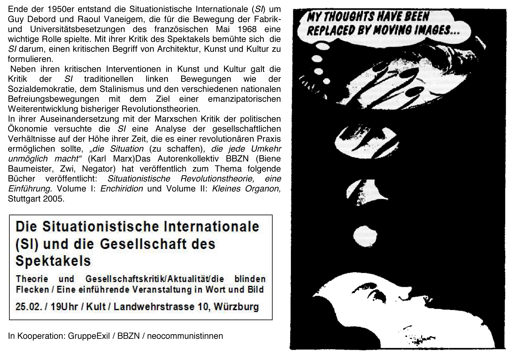

der Gesellschaften, in welchen die modernen Produktionsbedingungen herrschen, erscheint als eine ungeheuere Sammlung von Spektakeln. Alles, was unmittelbar erlebt wurde, ist in eine Vorstellung entwichen. – Guy Debord
Am 25. Februar 2010 findet in Kooperation mit den neocommunist_innen und dem Autor_innenkollektiv BBZN ein Vortrag über die Situationistische Internationale und die Gesellschaft des Spektakels statt. Wie so oft um 19:00 Uhr im Kult.
Ende der 1950er entstand die Situationistische Internationale (SI) um Guy Debord und Raoul Vaneigem, die für die Bewegung der Fabrik- und Universitätsbesetzungen des französischen Mai 1968 eine wichtige Rolle spielte. Mit ihrer Kritik des Spektakels bemühte sich die SI darum, einen kritischen Begriff von Architektur, Kunst und Kultur zu formulieren.
Neben ihren kritischen Interventionen in Kunst und Kultur galt die Kritik der SI traditionellen linken Bewegungen wie der Sozialdemokratie, dem Stalinismus und den verschiedenen nationalen Befreiungsbewegungen mit dem Ziel einer emanzipatorischen Weiterentwicklung bisheriger Revolutionstheorien.
In ihrer Auseinandersetzung mit der Marxschen Kritik der politischen Ökonomie versuchte die SI eine Analyse der gesellschaftlichen Verhältnisse auf der Höhe ihrer Zeit, die es einer revolutionären Praxis ermöglichen sollte, „die Situation (zu schaffen), die jede Umkehr unmöglich macht“ (Karl Marx)Das Autorenkollektiv BBZN (Biene Baumeister, Zwi, Negator) zum Thema folgende Bücher veröffentlicht: Situationistische Revolutionstheorie, eine Einführung. Volume I: Enchiridion und Volume II: Kleines Organon, Stuttgart 2005.

Literaturtipps:
Guy Debord – Die Gesellschaft des Spektakels (kostenlos)
Raoul Vaneigem – Handbuch der Lebenskunst
Situationistische Revolutionstheorie – Autorenkollektiv BBZN Organon
René Viénet: Wütende und Situationisten in der Bewegung der Besetzungen
Texte der SI
Über die Geschichte der SI (kostenlos)
61 Thesen – Die Situationistische Internationale und ihre Zeit
Archiv mit vielen Texten der SI
Raoul Vaneigem – Handbuch der Lebenskunst
Viele Bücher der SI kostenlos zum Lesen
Bestimmt gibt es auch den Rest der Bücher kostenlos im Internet. Wer Google richtig nutzt, weiß das aber sicherlich!

1 Antwort auf “Das ganze Leben…”